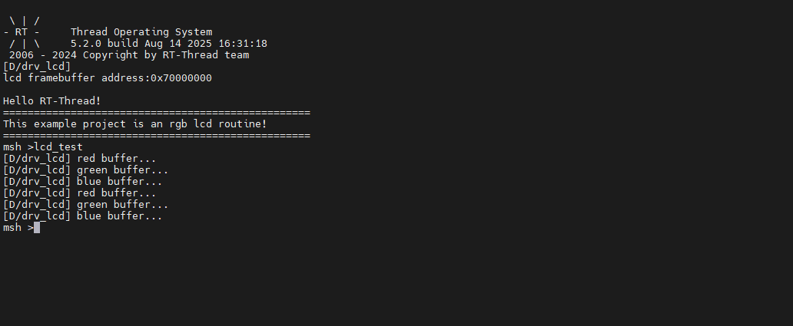

RGB LCD 示例说明
中文 | English
简介
本示例演示了如何在 Titan Board 上使用 RA8 系列 MCU 的 GLCDC 模块结合 RT-Thread 的 LCD 驱动框架驱动 RGB LCD 屏幕，实现图像显示与界面更新。文档将详细介绍 RA8 系列 GLCDC 外设特性及 RT-Thread LCD 驱动框架，并提供示例配置和操作方法。
RA8 系列 GLCDC 模块
1. 简介
**GLCDC（Graphics LCD Controller）**是 RA8 系列 MCU 内置的高性能图形控制器模块，专门用于驱动 TFT/RGB LCD 屏幕，支持各种分辨率、色彩格式和图像处理功能。结合 RT-Thread 的 LCD 驱动框架，可以实现统一接口下的屏幕初始化、刷新、图像绘制及 DMA 加速等功能。
RA8 系列 GLCDC (Graphics LCD Controller) 提供了从 MCU 内部存储器或外部图像缓存向 RGB/LCD 显示屏输出图像的能力。它集成了：
帧缓冲控制：可配置多帧缓冲，实现页面切换或双缓冲显示
颜色格式支持：RGB565, RGB888, ARGB8888 等
图形处理功能：背景图层、文字/图形合成、透明度混合、调色板等
同步信号生成：HSYNC, VSYNC, DE（Data Enable）等
DMA 支持：高速数据传输，减少 CPU 占用
中断功能：帧结束中断、行结束中断等
2. 模块架构
RA8 GLCDC 模块主要包含以下子模块：
图层合成单元（Layer Composition Unit）
支持多图层叠加
提供 alpha blending、透明度控制、颜色键控
可以对图层进行旋转、翻转处理
帧缓冲接口（Frame Buffer Interface）
支持访问 MCU 内部 SRAM 或外部存储器
提供单/双缓冲模式，保证连续显示
配合 DMA 自动读取图像数据
DMA 控制器（DMA Controller）
自动传输像素数据到 RGB 输出端口
可配置突发长度，提高带宽利用率
支持循环传输，适合视频或动画场景
同步信号生成器（Timing Generator）
自动生成 HSYNC/VSYNC/DE 信号
支持 TTL 接口 RGB 时序
可配置极性、同步宽度、前后肩时间等
中断与事件处理单元（Interrupt/Event Controller）
提供帧结束中断、行结束中断
可用于页面切换、动态绘制或滚动显示
支持 DMA 传输完成触发中断
3. GLCDC 工作原理
帧缓冲读取
GLCDC 通过 DMA 从内存读取图像数据，支持单/双缓冲模式，保证连续显示。
图层合成
支持多图层叠加，例如背景图层 + 前景图层 + 图标/文字图层
提供透明度控制和调色板映射
像素时序输出
根据 LCD 的接口要求生成 HSYNC/VSYNC/DE 信号
支持 RGB 并行接口、TTL 接口或 LVDS（视具体板级实现）
中断与事件
帧结束中断（VBlank）：可用于更新下一帧数据
行结束中断：可用于滚动显示或动态绘制
4. GLCDC 支持的功能与特性
功能类别 |
描述 |
|---|---|
分辨率 |
最高可达 800×480 (具体取决于 MCU 型号及时钟配置) |
色彩模式 |
RGB565、RGB888、ARGB8888 等 |
多图层 |
背景 + 前景 + 符号图层，可叠加混合 |
帧缓冲 |
支持单帧/双帧缓冲模式，DMA 传输提高性能 |
调色板 |
支持 8/16 位调色板映射，实现色彩转换 |
同步信号 |
HSYNC, VSYNC, DE，可配置极性和时序 |
DMA 支持 |
自动从内存传输图像数据，无需 CPU 干预 |
中断 |
帧结束、行结束中断，可用于屏幕刷新同步 |
旋转/翻转 |
支持 90°/180°/270°旋转及 X/Y 翻转 |
RT-Thread LCD 驱动框架
RT-Thread 提供了 统一的 LCD 驱动框架，通过封装底层控制器，支持不同屏幕类型与 MCU 外设。框架主要接口如下：
主要接口
函数/宏 |
功能 |
|---|---|
|
查找 LCD 设备句柄 |
|
打开设备，初始化 LCD 硬件 |
|
控制 LCD，例如更新lcd图像、设置背光、读取屏幕信息 |
|
向 LCD 写入像素数据 |
|
从 LCD 读取像素数据（部分屏幕支持） |
|
关闭设备 |
硬件说明

FSP 配置
HyperRAM 配置
新建 r_ospi_b stack：

配置 r_ospi_b stack：

HyperRAM 引脚配置：

RGB LCD 配置
新建
r_glcdcstack：

配置中断回调和图形层1：

配置输出参数、CLUT、TCON和抖动。

配置 GLCDC 的引脚：


LCD 背光配置
新建
r_gptstack：

配置背光 PWM 输出：

D/AVE 2D 配置
新建
r_drwstack：

RT-Thread Settings 配置
在 RT-Thread Settings 中使能 RGB565 LCD，使用 pwm7 输出屏幕背光。

编译&下载
RT-Thread Studio：在RT-Thread Studio 的包管理器中下载 Titan Board 资源包，然后创建新工程，执行编译。
编译完成后，将开发板的 USB-DBG 接口与 PC 机连接，然后将固件下载至开发板。
运行效果
复位开发板后在终端输入 lcd_test 命令运行刷屏程序。
